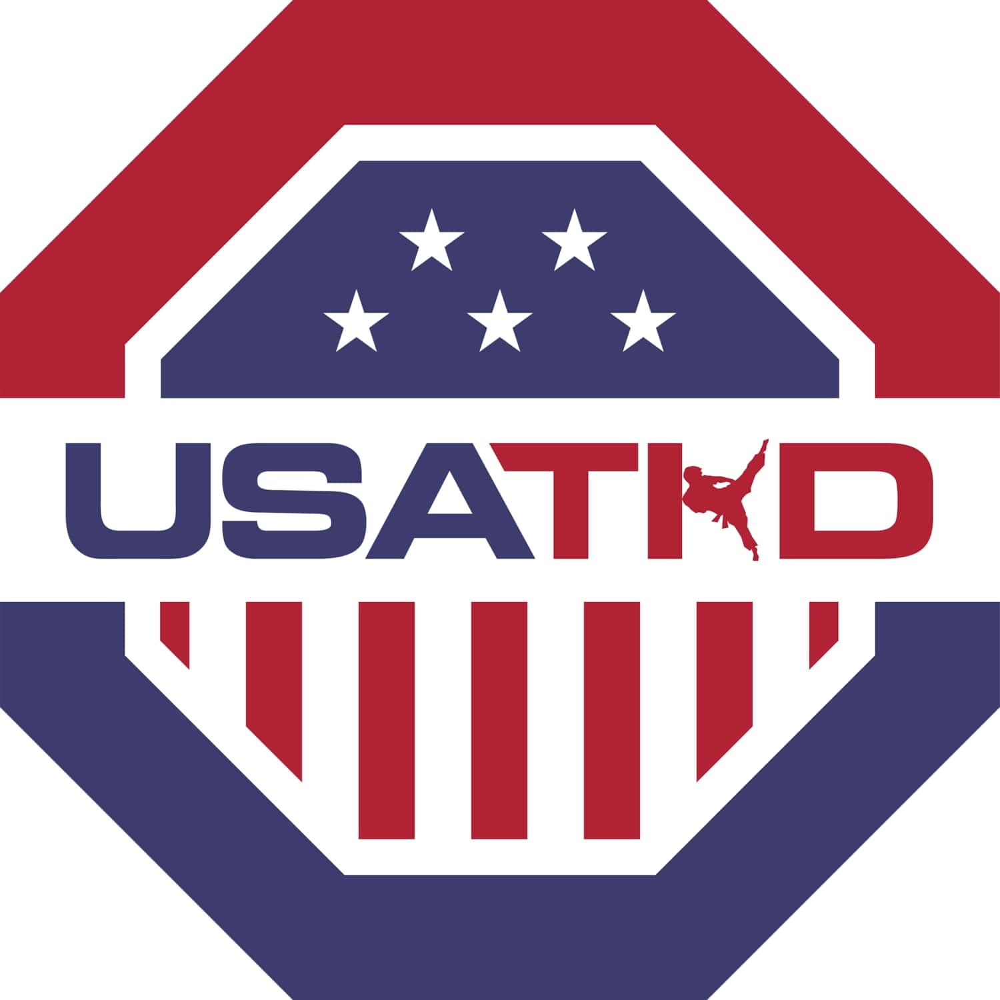

During the football season, I like to go volunteer at the concessions stands with the Phillipine Student Association. We greeted and interacted with 300+ customers as a cashier delivering food orders and handling the point-of-sales system in an efficient manner to execute high standards of customer service during high-volume rushes. Also, we coordinated with groups of 10+ volunteers to refill beverage stations, prepare food orders, and maintain store cleanliness for smooth operations and compliance with food and health regulations. If you are a student at Texas A&M and are interested in volunteering for concessions, join the PhilSA organization!
When I was in high school, Taekwondo was a prevelant hobby in my life. I've competed for 8+ years and have won many times. Now, I like to fly out to tournaments and work as a referee. A couple summers ago,
I went to Fort Lauderdale in Florida to referee for the AAU Junior Olympics. It lasted one week and it was one of my favorite experiences. It was great to see young talent and strong compeitiors compete
against each other. I've also refereed in Chicago, Texas, and San Antonio.

Click here to change the webpage style!